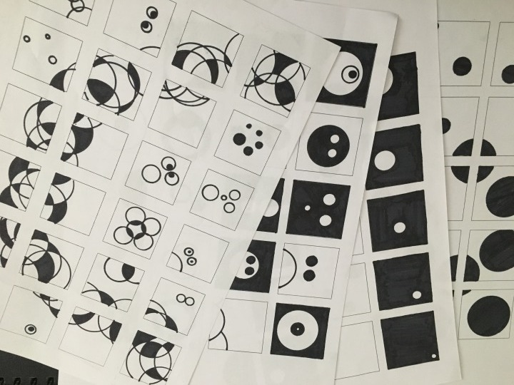
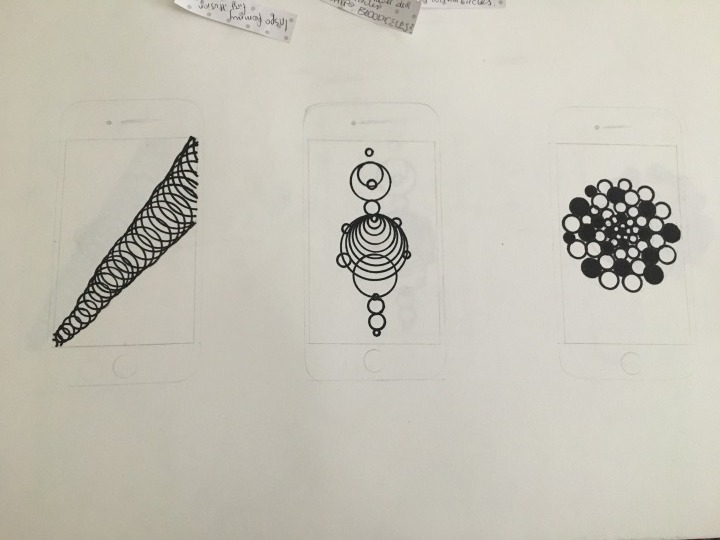
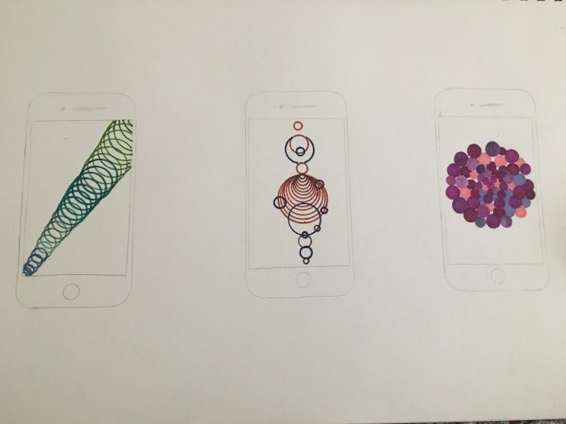
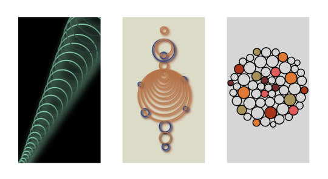
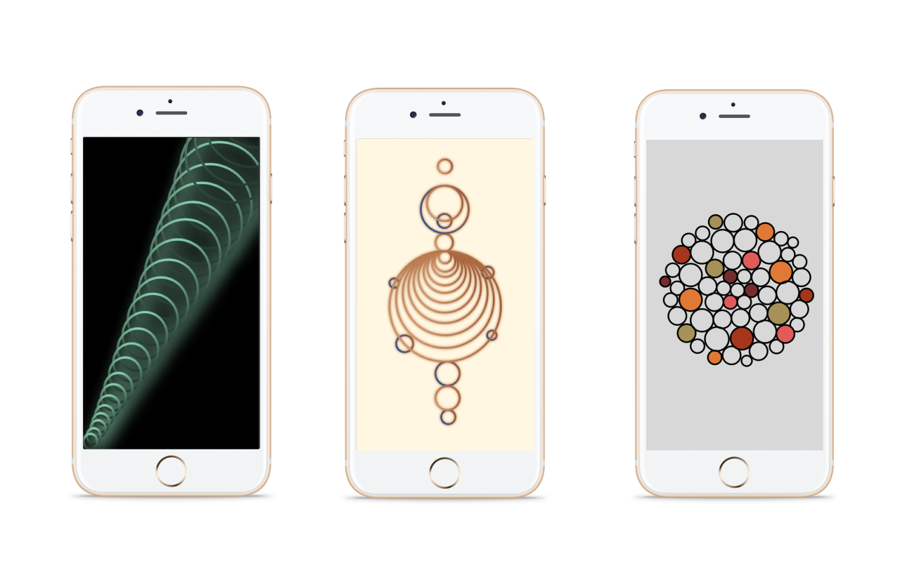

IPhone Wallpapers
Creating a series of IPhone Wallpapers
In this project I created a series of Iphone Wallpapers using dots.
Always start on Paper
To get used to drawing with dots, I decided to draw one dot in each square within a grid of 20 squares. This then increased to 3, then 5. After doing this, I then sketched out some ideas for my IPhone wallpapers in black and white, then in colour.



Digitalising
I then digitalised my designs. I put my designs against an IPhone template to get a more realtistic view of what they would look like. I designed them using 'sketch', this was my first time using the software. However, I quickly got to grips with it which has made me more confident in using it for future purposes.

These are my final Iphone wallpapers. Due to this being one of the first pieces of work I've completed on sketch I am very happy with them and I can't wait to create more.
